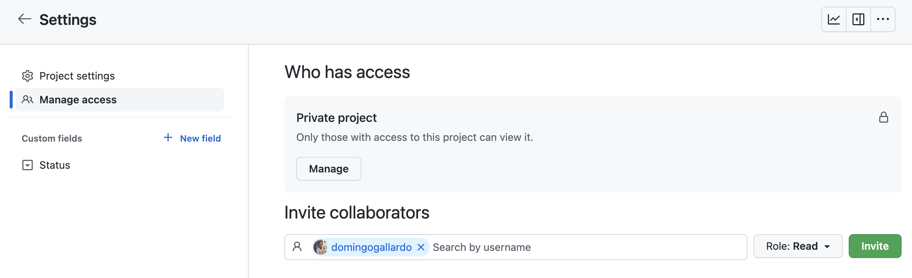
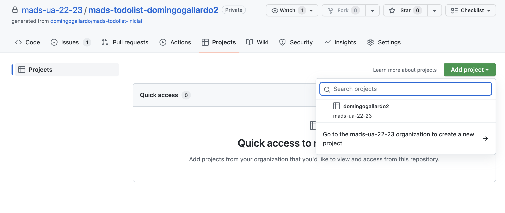

Práctica 2: Aplicación ToDoList¶
1. Objetivos¶
En práctica 2 vamos a trabajar sobre la aplicación inicial domingogallardo/mads-todolist-inicial.
Esta parte tendrá una duración de cuatro semanas. Deberás realizarla de forma individual, siguiendo las indicaciones que encontrarás en este documento. Tendrás que desarrollar código y trabajar en GitHub desarrollando issues, pull requests, releases y actualizando los tableros del proyecto (en Trello y en GitHub).
Al igual que en la práctica 1 usaremos GitHub Classroom para crear un repositorio individual con el que realizarás la práctica. El proyecto base será la aplicación inicial domingogallardo/mads-todolist-inicial. En este repositorio se ha seguido una metodología similar a la que vamos a utilizar en este práctica y puedes examinarlo para ver distintos elementos:
Debes leer la introducción a Spring Boot para entender los conceptos fundamentales del framework.
2. Aplicación inicial¶
La aplicación con la que vamos a trabajar es una típica aplicación ToDo que sirve para gestionar tareas pendientes. Se pueden registrar y logear usuarios y los usuarios registrados pueden añadir, modificar y borrar tareas pendientes de hacer.
A continuación puedes ver dos de las pantallas de la aplicación.
 |
| Pantalla de login |
 |
| Pantalla con listado de tareas |
Iremos desarrollando características adicionales de la aplicación a lo largo de las prácticas. El nombre de la aplicación es mads-todolist.
3. La aplicación ToDoList¶
La aplicación mads-todolist-inicial es la versión inicial de la aplicación que se va a desarrollar durante toda la asignatura.
Es una aplicación bastante más compleja que la vista en la práctica 1. Entre otros, tiene los siguientes elementos:
- Distintos comandos HTTP: GET, POST, DELETE.
- Recogida de datos en formularios HTML y validación de los datos.
- Base de datos gestionada con JPA (Java Persisence API), un ORM (Object Relational Mapping) implementado por la librería Hibernate. Se utiliza una capa de persistencia basada en clases repository.
- Capa de servicio que proporciona la lógica de negocio a los controllers.
- Las clases controller sólo se encargan de hacer de interfaz de la
capa de servicio:
- Recoger datos de la petición HTTP,
- tratar y validar estas entradas,
- llamar a la clase de servicio para que se realice la acción requerida, y
- convertir la respuesta obtenida de la aplicación en una vista que se devuelve como respuesta de la petición.
- En las plantillas se incluye Bootstrap y scripts JavaScript.
- Las clases de servicio y de repository se obtienen por inyección de dependencias.
- Gran número de tests que prueban la capa de servicios y la de presentación.
Vamos a ver con un poco más de detalle dónde puedes encontrar en el código todos estos elementos.
Configuración de la aplicación¶
Los distintos parámetros de la aplicación Spring Boot se configuran un
fichero de propiedades. El fichero de propiedades por defecto es
application.properties.
spring.application.name = mads-todolist
spring.datasource.url=jdbc:h2:mem:dev
spring.jpa.properties.hibernate.dialect = org.hibernate.dialect.H2Dialect
spring.jpa.hibernate.ddl-auto=update
logging.level.org.hibernate.SQL=debug
logging.level.madstodolist=debug
spring.sql.init.mode=never
spring.h2.console.enabled=true
spring.h2.console.path=/h2-console
# Activamos el perfil dev
spring.profiles.active=dev
# Deshabilitamos Open EntityManager in View
# https://docs.spring.io/spring-boot/docs/current-SNAPSHOT/reference/html/data.html#data.sql.jpa-and-spring-data.open-entity-manager-in-view
# Ver tambien https://docs.spring.io/spring-framework/docs/current/javadoc-api/org/springframework/orm/hibernate5/support/OpenSessionInViewInterceptor.html
# y https://www.baeldung.com/spring-open-session-in-view
spring.jpa.open-in-view=false
Entre otras cosas, se define las características de la fuente de datos con la que trabaja la aplicación (la base de datos en memoria H2):
- El parámetro
spring.jpa.hibernate.ddl-auto=updatehace que Hibernate actualice automáticamente los esquemas de la base de datos, construyéndolos a partir de las clasesEntity. En un entorno de producción el valor de esta propiedad deberá servalidatepara no modificar la base de datos de producción. - El parámetro
spring.profiles.active=devdefine el perfil que se activa por defecto al lanzar la aplicación, el perfil de desarrollo (dev). En prácticas posteriores veremos cómo es útil usar distintos perfiles (por ejemplo, desarrollo y producción) para configurar qué bases de datos se van a usar.
Los datos iniciales de la aplicación se cargan mediante el servicio
InitDbService. Sólo se cargan si el perfil activo es dev.
@Service
// Se ejecuta solo si el perfil activo es 'dev'
@Profile("dev")
public class InitDbService {
@Autowired
private UsuarioRepository usuarioRepository;
@Autowired
private TareaRepository tareaRepository;
// Se ejecuta tras crear el contexto de la aplicación
// para inicializar la base de datos
@PostConstruct
public void initDatabase() {
Usuario usuario = new Usuario("user@ua");
usuario.setNombre("Usuario Ejemplo");
usuario.setPassword("123");
usuarioRepository.save(usuario);
Tarea tarea1 = new Tarea(usuario, "Lavar coche");
tareaRepository.save(tarea1);
Tarea tarea2 = new Tarea(usuario, "Renovar DNI");
tareaRepository.save(tarea2);
}
}
Base de datos H2 en memoria en desarrollo
En esta práctica vamos a trabajar únicamente con la base de datos en
memoria. Esto significa que los datos que introduzcamos van a estar
presentes mientras que la aplicación esté funcionando. Cuando matemos
la aplicación y la volvamos a reiniciar sólo estarán los datos
iniciales, los datos que se cargan con el servicio InitDbService.
En la práctica 3 utilizaremos una base de datos real, que deberemos gestionar también en producción. En concreto, se tratará de una base de datos PostgresSQL.
Por último, el parámetro spring.jpa.open-in-view=false deshabilita
una característica de Spring denominada open in view que mantiene
abierta la conexión de la base de datos de forma automática en cada
petición HTTP. Se trata de una característica que facilita el trabajo
con las relaciones lazy entre entidades, pero puede introducir
errores no deseados al permitir acceder a la base de datos en la capa
controller. Al deshabilitar esta característica tendremos que
gestionar manualmente las relaciones lazy, recuperándolas en la capa
de servicio, en donde sí que mantenemos abierta la conexión con la
base de datos. Lo veremos más adelante con más detalle.
Otras configuraciones¶
Es posible definir otras configuraciones e indicar en el comando de ejecución de la aplicación Spring Boot qué fichero de configuración usar. Lo veremos en la práctica 3.
En esta práctica se define otra configuración en el directorio de test, que es la que se carga cuando se lanzan los tests:
spring.datasource.url=jdbc:h2:mem:test
spring.jpa.properties.hibernate.dialect = org.hibernate.dialect.H2Dialect
spring.jpa.hibernate.ddl-auto=create
logging.level.org.hibernate.SQL=debug
spring.sql.init.mode=never
# obligamos a que Hibernate inicialice los esquemas de datos
# https://github.com/spring-projects/spring-boot/wiki/Spring-Boot-2.5-Release-Notes#sql-script-datasource-initialization
spring.jpa.defer-datasource-initialization=true
# Deshabilitamos Open EntityManager in View
# https://docs.spring.io/spring-boot/docs/current-SNAPSHOT/reference/html/data.html#data.sql.jpa-and-spring-data.open-entity-manager-in-view
# Ver tambien https://docs.spring.io/spring-framework/docs/current/javadoc-api/org/springframework/orm/hibernate5/support/OpenSessionInViewInterceptor.html
# y https://www.baeldung.com/spring-open-session-in-view
spring.jpa.open-in-view=false
Una diferencia con el fichero de configuración de desarrollo es el
nombre de la fuente de datos, el modo del
spring.jpa.hibernate.ddl-auto, que es create y el fichero de datos
iniciales que se carga al ejecutar los tests.
La otra diferencia es que no se activa el perfil dev, por lo que no se carga
ningún dato en la aplicación para los tests. Ya veremos más adelante que los
datos para los tests se cargan en los propios tests.
Gestión de persistencia con JPA¶
Para la gestión de la persistencia de los datos en la aplicación Spring Boot usaremos Spring Data JPA. Se trata de un API de Spring Boot que se construye sobre JPA (Java Persistence API), el ORM (Object Relational Mapping) estándar de Java. La implementación de JPA que utiliza Spring Boot es Hibernate.
Spring Data JPA usa todos los conceptos de JPA y añade algunos
adicionales que facilitan aun más su utilización, como es la
definición de interfaces Repository con métodos CRUD estándar para
las entidades.
Definición del modelo de datos¶
El framework JPA permite definir el esquema de la base de datos usando anotaciones en las clases denominadas de entidad. Para cada clase de entidad se define una tabla en la base de datos, con columnas que se mapean con sus atributos.
Por ejemplo, la clase Usuario que se lista a continuación define la
tabla usuarios en la base de datos. Los distintos atributos (login,
email, ...) se corresponden con las columnas de la tabla.
El atributo id se corresponde con la clave primaria de la tabla. JPA
define varias estrategias para obtener esa clave primera, y se ha
escogido la estrategia @GeneratedValue(strategy =
GenerationType.IDENTITY) que define una columna que se autoincrementa
en cada operación de inserción de un nuevo registro en la tabla.
Además de los atributos, en la clase se define un constructor con los
atributos obligatorios para definir un usuario (en nuestro caso el
correo electronico), los getters y setters de todas las
propiedades (necesario para JPA) y los métodos equals y hashCode
para comparar usuarios.
Los métodos equals y hashCode son necesarios para buscar
instancias de la entidad en colecciones y JPA los usa para no incluir
instancias repetidas en los resultados de las queries. El método
equals proporcionado no es el que genera IntelliJ por defecto, sino
que hay que considerar si la instancia ha sido ya vinculada a la base
de datos o no. En el caso en que la instancia ya esté vinculada a la
base de datos, tendrá una clave primaria asignada y ésta será la que
se usará para comparar. En el caso en que la instancia no esté
vinculada (se acaba de crear o la estamos usando para alguna parte de
la lógica de negocio y no se va a persistir) se comparan los atributos
obligatorios (en este caso el correo electrónico).
package madstodolist.model;
// Imports
...
@Entity
@Table(name = "usuarios")
public class Usuario implements Serializable {
private static final long serialVersionUID = 1L;
@Id
@GeneratedValue(strategy = GenerationType.IDENTITY)
private Long id;
@NotNull
private String email;
private String nombre;
private String password;
@Column(name = "fecha_nacimiento")
@Temporal(TemporalType.DATE)
private Date fechaNacimiento;
// La relación es lazy por defecto,
// es necesario acceder a la lista de tareas para que se carguen
@OneToMany(mappedBy = "usuario")
Set<Tarea> tareas = new HashSet<>();
// Constructor vacío necesario para JPA/Hibernate.
// No debe usarse desde la aplicación.
public Usuario() {}
// Constructor público con los atributos obligatorios. En este caso el correo electrónico.
public Usuario(String email) {
this.email = email;
}
// Getters y setters atributos básicos
...
// Getters y setters de la relación
public Set<Tarea> getTareas() {
return tareas;
}
// Método helper para añadir una tarea a la lista y establecer la relación inversa
public void addTarea(Tarea tarea) {
// Si la tarea ya está en la lista, no la añadimos
if (tareas.contains(tarea)) return;
// Añadimos la tarea a la lista
tareas.add(tarea);
// Establecemos la relación inversa del usuario en la tarea
if (tarea.getUsuario() != this) {
tarea.setUsuario(this);
}
}
@Override
public boolean equals(Object o) {
if (this == o) return true;
if (o == null || getClass() != o.getClass()) return false;
Usuario usuario = (Usuario) o;
if (id != null && usuario.id != null)
// Si tenemos los ID, comparamos por ID
return Objects.equals(id, usuario.id);
// si no comparamos por campos obligatorios
return email.equals(usuario.email);
}
@Override
public int hashCode() {
// Generamos un hash basado en los campos obligatorios
return Objects.hash(email);
}
}
En la definición de la entidad también se incluyen relaciones con
otras entidades. En este caso un Usuario tiene muchas Tareas (una
relación una-a-muchos).
La relación uno-a-muchos se representa en la base de datos con una
clave ajena. El atributo mappedBy indica que la clave ajena se va a
guardar en la columna correspondiente con el atributo usuario de la
entidad Tarea.
La definición de Tarea es la siguiente:
package madstodolist.model;
// Imports
...
@Entity
@Table(name = "tareas")
public class Tarea implements Serializable {
private static final long serialVersionUID = 1L;
@Id
@GeneratedValue(strategy = GenerationType.IDENTITY)
private Long id;
@NotNull
private String titulo;
@NotNull
// Relación muchos-a-uno entre tareas y usuario
@ManyToOne
// Nombre de la columna en la BD que guarda físicamente
// el ID del usuario con el que está asociado una tarea
@JoinColumn(name = "usuario_id")
private Usuario usuario;
// Constructor vacío necesario para JPA/Hibernate.
// No debe usarse desde la aplicación.
public Tarea() {}
// Al crear una tarea la asociamos automáticamente a un usuario
public Tarea(Usuario usuario, String titulo) {
this.titulo = titulo;
setUsuario(usuario); // Esto añadirá la tarea a la lista de tareas del usuario
}
// Getters y setters atributos básicos
...
// Getters y setters de la relación
public Usuario getUsuario() {
return usuario;
}
// Método para establecer la relación con el usuario
public void setUsuario(Usuario usuario) {
// Comprueba si el usuario ya está establecido
if(this.usuario != usuario) {
this.usuario = usuario;
// Añade la tarea a la lista de tareas del usuario
usuario.addTarea(this);
}
}
@Override
public boolean equals(Object o) {
if (this == o) return true;
if (o == null || getClass() != o.getClass()) return false;
Tarea tarea = (Tarea) o;
if (id != null && tarea.id != null)
// Si tenemos los ID, comparamos por ID
return Objects.equals(id, tarea.id);
// si no comparamos por campos obligatorios
return titulo.equals(tarea.titulo) &&
usuario.equals(tarea.usuario);
}
@Override
public int hashCode() {
return Objects.hash(titulo, usuario);
}
}
Recuperación de colecciones lazy¶
Como hemos visto anteriormente, en la aplicación se define la relación uno-a-muchos entre usuarios y tareas: un usuario tiene muchas tareas.
Por defecto, todas las relaciones a-muchos en JPA se definen de
tipo LAZY.
La característica de los atributos marcados como lazy en JPA es que
no se traen a memoria cuando se recupera la entidad, sino cuando se
consultan explícitamente accediendo al atributo. Para que se traigan a
memoria debe accederse a la colección de la entidad estando abierta la
conexión con la base de datos. Normalmente esto se hace en la capa de servicio
marcando en los métodos en los que se accede a las entidades con la anotación
@Transactional.
Las entidades que usemos en estos métodos estarán conectadas a la base de datos
y podremos recuperar sus relaciones lazy, accediendo a la colección. Si
queremos obtener todos los datos de la relación podemos por ejemplo llamar al
método size() de la misma, o convertirla en un objeto DTO (TareaData) para devolverla al
controller, tal y como se hace en el código de la aplicación:
@Transactional(readOnly = true)
public List<TareaData> allTareasUsuario(Long idUsuario) {
logger.debug("Devolviendo todas las tareas del usuario " + idUsuario);
Usuario usuario = usuarioRepository.findById(idUsuario).orElse(null);
if (usuario == null) {
throw new TareaServiceException("Usuario " + idUsuario + " no existe al listar tareas ");
}
// Hacemos uso de Java Stream API para mapear la lista de entidades a DTOs.
List<TareaData> tareas = usuario.getTareas().stream()
.map(tarea -> modelMapper.map(tarea, TareaData.class))
.collect(Collectors.toList());
// Ordenamos la lista por id de tarea
Collections.sort(tareas, (a, b) -> a.getId() < b.getId() ? -1 : a.getId() == b.getId() ? 0 : 1);
return tareas;
}
Si devolviéramos al controller directamente una entidad que contiene una
colección lazy sin haberla inicializado, cuando se intentar acceder a ella se
produciría un error por estar fuera del método anotado con
@Transactional.
La otra forma de definir una relación es usar el tipo eager, en el que JPA traerá siempre a memoria todos los elementos cuando se recupere cualquier entidad. En general, no es conveniente definir una relación como eager porque puede provocar problemas de rendimiento en el caso en que haya muchos elementos relacionados. Por ello, por defecto solo se definen como eager las relaciones uno-a-uno.
En la práctica 3 veremos más ejemplo de trabajo con relaciones lazy.
Clases Repository¶
Spring define la clase genérica CrudRepository que contienen métodos por
defecto para actualizar las entidades y realizar queries sobre
ellas. Para dejar abierta la posibilidad de cambiar la implementación,
se definen con interfaces.
public interface CrudRepository<T, ID extends Serializable> extends Repository<T, ID> {
<S extends T> S save(S entity);
Optional<T> findById(ID primaryKey);
Iterable<T> findAll();
long count();
void delete(T entity);
boolean existsById(ID primaryKey);
// … more functionality omitted.
}
Para usar estos métodos con nuestras entidades basta con definir
interfaces que extienden esta clase genérica. Lo hemos hecho en el package
repository.
Por ejemplo, la interfaz UsuarioRepository:
package madstodolist.repository;
import madstodolist.model.Usuario;
import org.springframework.data.repository.CrudRepository;
import java.util.Optional;
public interface UsuarioRepository extends CrudRepository<Usuario, Long> {
Optional<Usuario> findByEmail(String s);
}
En la interfaz se añade un método findByEmail que hace que
Spring construya automáticamente una consulta sobre la base de datos. Al
usar como nombre del método el nombre de la propiedad de la entidad
(email), Spring puede generar automáticamente la consulta.
Puedes consultar una lista completa de las traducciones de nombres de métodos a consultas a la base de datos en este enlace de la documentación de Spring Boot.
También es posible definir explícitamente en el Repository la consulta
a realizar a la base de datos utilizando la anotación @Query. Puedes encontrar varios ejemplos en este enlace.
Una vez definida la interfaz, ya podemos inyectar una instancia de repository y usarla en las clases de servicio. Por ejemplo, mostramos el método de servicio que registra un usuario:
@Service
public class UsuarioService {
@Autowired
private UsuarioRepository usuarioRepository;
@Autowired
private ModelMapper modelMapper;
...
// Se añade un usuario en la aplicación.
// El email y password del usuario deben ser distinto de null
// El email no debe estar registrado en la base de datos
@Transactional
public UsuarioData registrar(UsuarioData usuario) {
Optional<Usuario> usuarioBD = usuarioRepository.findByEmail(usuario.getEmail());
if (usuarioBD.isPresent())
throw new UsuarioServiceException("El usuario " + usuario.getEmail() + " ya está registrado");
else if (usuario.getEmail() == null)
throw new UsuarioServiceException("El usuario no tiene email");
else if (usuario.getPassword() == null)
throw new UsuarioServiceException("El usuario no tiene password");
else {
Usuario usuarioNuevo = modelMapper.map(usuario, Usuario.class);
usuarioNuevo = usuarioRepository.save(usuarioNuevo);
return modelMapper.map(usuarioNuevo, UsuarioData.class);
}
}
...
}
En el cuerpo del método se llama al método findByEmail del
repositorio que realiza una búsqueda en la base de datos y al método
save que actualiza el valor de la entidad.
La anotación @Transactional hace dos cosas. En primer lugar, abre
una conexión con la base de datos y hace que todas las llamadas a las
clases repository se realicen usando esa conexión. Las entidades están
conectadas a la base de datos durante todas las sentencias que se
ejecutan dentro del método anotado y cualquier cambio en ellas se
propaga a la base de datos (en este caso el título de la
tarea). Además, y muy importante, las relaciones lazy pueden
recuperarse sin problemas accediendo a los atributos correspondientes
de las entidades.
En segundo lugar, la anotación @Transactional, como su nombre
indica, hace que las acciones sobre la base de datos se ejecuten de
forma transaccional. Se abre la transacción al del método y se cierra
al final. Si sucede alguna excepción durante su ejecución la
transacción se deshace.
La interfaz TareaRepository es similar.
DTOs (Data Transfer Objects)¶
Los Data Transfer Objects (DTOs) son una práctica efectiva para separar la representación de datos que usa la capa de negocio de la que se expone a través de la API. En el mundo de Spring, los DTOs resultan especialmente útiles para manipular y transferir datos entre distintas capas de la aplicación, como de los repositorios a los servicios o de los servicios a los controladores.
Los DTOs permiten separar la representación de datos utilizada en la capa de negocio de la que se expone a través de la API. Esto es particularmente útil cuando tienes una entidad con múltiples campos pero, en ciertas circunstancias, sólo necesitas un subconjunto de ellos. Usar un DTO en estos casos permite transferir solo los datos necesarios, lo que hace la operación más eficiente y segura.
Además, los DTOs proporcionan un desacoplamiento con la base de datos. A diferencia de las entidades que se obtienen directamente de los repositorios, los DTOs están desacoplados de la base de datos. Mientras que cualquier cambio en un objeto de entidad podría propagarse a la base de datos si estás dentro de un contexto transaccional, los cambios en un DTO no tienen ningún efecto en la base de datos. Por ello es recomendado que sean este tipo de objetos los devueltos por los servicios, para que los controllers no puedan realizar modificaciones en la base de datos.
En nuestra aplicación todas las clases DTO están en el paquete dto:
LoginDataRegistroDataTareaDataUsuarioData
Las clases LoginData y RegistroData transportan los datos entre las
plantillas de la vista y el controller. Y las clases TareaData y UsuarioData
se usan para devolver datos del servicio al controller.
ModelMapper¶
ModelMapper es una biblioteca de mapeo de objetos en Java que agiliza y
estandariza la conversión entre entidades de base de datos y Data Transfer
Objects (DTOs). Al usarla, puedes evitar el tedio y los posibles errores de
escribir código de mapeo manual. Además, te brinda una gran flexibilidad
mediante diversas estrategias de coincidencia y configuraciones
personalizables.
Por ejemplo, si tienes una clase Estudiante con campos como nombre, edad y
numeroMatricula, y un DTO llamado EstudianteDTO que solo necesita nombre y edad,
podrías encontrarte escribiendo un código manual para asignar cada campo de la
entidad al DTO correspondiente:
Estudiante estudiante = new Estudiante("Ana", 20, "123ABC");
EstudianteDTO estudianteDTO = new EstudianteDTO();
estudianteDTO.setNombre(estudiante.getNombre());
estudianteDTO.setEdad(estudiante.getEdad());
Con ModelMapper, esta tarea se condensa en unas pocas líneas:
ModelMapper modelMapper = new ModelMapper();
Estudiante estudiante = new Estudiante("Ana", 20, "123ABC");
EstudianteDTO estudianteDTO = modelMapper.map(estudiante, EstudianteDTO.class);
El uso de ModelMapper no solo hace que tu código sea más sencillo de escribir y
mantener, sino que también proporciona un enfoque coherente para el mapeo de
objetos en tu aplicación, lo cual es de mucha importancia en proyectos de gran
envergadura.
Para poder trabajar con ModelMapper en la aplicación lo declaramos como una
dependencia en el fichero POM y creamos un Bean de Spring para poder usarlo con
inyección de dependencias:
package madstodolist.config;
// Imports
...
@Configuration
public class ModelMapperConfig {
@Bean
public ModelMapper modelMapper() {
return new ModelMapper();
}
}
Ejemplos de DTOs en nuestra aplicación¶
Veamos dos ejemplos de construcción de DTOs como objetos devueltos por métodos de servicios de nuestra aplicación.
Primer ejemplo:
@Transactional(readOnly = true)
public TareaData findById(Long tareaId) {
logger.debug("Buscando tarea " + tareaId);
Tarea tarea = tareaRepository.findById(tareaId).orElse(null);
if (tarea == null) return null;
else return modelMapper.map(tarea, TareaData.class);
}
En este primer ejemplo, el método findById se encarga de buscar una tarea
específica en la base de datos utilizando su tareaId. Si la tarea no se
encuentra, devuelve null. En caso contrario, utiliza ModelMapper para convertir
la entidad Tarea a su representación DTO TareaData.
Segundo ejemplo:
@Transactional(readOnly = true)
public List<TareaData> allTareasUsuario(Long idUsuario) {
logger.debug("Devolviendo todas las tareas del usuario " + idUsuario);
Usuario usuario = usuarioRepository.findById(idUsuario).orElse(null);
if (usuario == null) {
throw new TareaServiceException("Usuario " + idUsuario + " no existe al listar tareas ");
}
// Hacemos uso de Java Stream API para mapear la lista de entidades a DTOs.
List<TareaData> tareas = usuario.getTareas().stream()
.map(tarea -> modelMapper.map(tarea, TareaData.class))
.collect(Collectors.toList());
// Ordenamos la lista por id de tarea
Collections.sort(tareas, (a, b) -> a.getId() < b.getId() ? -1 : a.getId() == b.getId() ? 0 : 1);
return tareas;
}
El segundo ejemplo muestra cómo listar todas las tareas de un usuario
específico. Se obtiene el usuario con el método findById y, si no se encuentra,
se lanza una excepción. Si el usuario existe, se hace uso de la Java Stream API
para transformar la lista de tareas del usuario (entidades) en una lista de DTOs
TareaData. Finalmente, la lista se ordena por el id de la tarea.
Servicios¶
Aunque ya hemos visto ejemplos de servicios en la sección anterior, vamos a detallar algo más la utilidad de esta capa.
La capa de servicios es la capa intermedia entre la capa de controllers y la de repository. Es la capa que implementa toda la lógica de negocio de la aplicación. En determinados contextos, también utilizamos objetos de transferencia de datos, o DTOs, para devolver información a los controllers de manera más eficiente.
La responsabilidad principal de la capa de servicios es crear, obtener o modificar los objetos entidad necesarios para cada funcionalidad a partir de los datos que envía la capa controller. Estos objetos entidad se trabajan en memoria y, cuando es necesario, se hacen persistentes los cambios utilizando la capa repository. Cuando la funcionalidad lo requiere, los datos se transforman a DTOs para su retorno al controller, añadiendo un nivel de desacoplamiento y eficiencia.
La capa de servicios también gestionará errores y lanzará excepciones cuando no se pueda realizar alguna funcionalidad. Los servicios obtienen instancias de Repository y de ModelMapper para la conversión entre entidades y DTOs, cuando sea necesario, mediante la inyección de dependencias.
Como hemos comentado anteriormente, los métodos de la capa de servicios estarán
anotados con @Transactional actualizar correctamente la base de datos y las
conexiones lazy y para garantizar la transaccionalidad.
Por ejemplo, la clase UsuarioService se define como se muestra a
continuación.
package madstodolist.service;
// Imports
...
@Service
public class UsuarioService {
Logger logger = LoggerFactory.getLogger(UsuarioService.class);
public enum LoginStatus {LOGIN_OK, USER_NOT_FOUND, ERROR_PASSWORD}
@Autowired
private UsuarioRepository usuarioRepository;
@Autowired
private ModelMapper modelMapper;
@Transactional(readOnly = true)
public LoginStatus login(String eMail, String password) {
Optional<Usuario> usuario = usuarioRepository.findByEmail(eMail);
if (!usuario.isPresent()) {
return LoginStatus.USER_NOT_FOUND;
} else if (!usuario.get().getPassword().equals(password)) {
return LoginStatus.ERROR_PASSWORD;
} else {
return LoginStatus.LOGIN_OK;
}
}
// Se añade un usuario en la aplicación.
// El email y password del usuario deben ser distinto de null
// El email no debe estar registrado en la base de datos
@Transactional
public UsuarioData registrar(UsuarioData usuario) {
Optional<Usuario> usuarioBD = usuarioRepository.findByEmail(usuario.getEmail());
if (usuarioBD.isPresent())
throw new UsuarioServiceException("El usuario " + usuario.getEmail() + " ya está registrado");
else if (usuario.getEmail() == null)
throw new UsuarioServiceException("El usuario no tiene email");
else if (usuario.getPassword() == null)
throw new UsuarioServiceException("El usuario no tiene password");
else {
Usuario usuarioNuevo = modelMapper.map(usuario, Usuario.class);
usuarioNuevo = usuarioRepository.save(usuarioNuevo);
return modelMapper.map(usuarioNuevo, UsuarioData.class);
}
}
@Transactional(readOnly = true)
public UsuarioData findByEmail(String email) {
Usuario usuario = usuarioRepository.findByEmail(email).orElse(null);
if (usuario == null) return null;
else {
return modelMapper.map(usuario, UsuarioData.class);
}
}
@Transactional(readOnly = true)
public UsuarioData findById(Long usuarioId) {
Usuario usuario = usuarioRepository.findById(usuarioId).orElse(null);
if (usuario == null) return null;
else {
return modelMapper.map(usuario, UsuarioData.class);
}
}
}
package madstodolist.service;
public class UsuarioServiceException extends RuntimeException {
public UsuarioServiceException(String message) {
super(message);
}
}
Estudia con detalle esta clase y la otra clase de servicio, TareaService.
Ventajas de utilizar una capa de servicios¶
Al utilizar clases de servicios, podemos aislar la lógica de negocio de la aplicación utilizando métodos y objetos Java, sin preocuparnos de cómo obtener los datos de la interfaz de usuario ni de cómo mostrar los resultados. De esta manera, si se necesita modificar la interfaz de usuario de la aplicación, o convertirla en un servicio REST que devuelva JSON en lugar de HTML, solo tendremos que tocar las clases controller, no las de servicio.
Además, al no tener ninguna dependencia con la interfaz de usuario, estas clases de servicios también podrán ser fácilmente testeadas. La mayoría de los tests automáticos los haremos sobre ellas.
Controllers¶
Los controllers son el punto de entrada a la lógica de negocio de la aplicación. Actúan como intermediarios entre las peticiones HTTP del usuario y la capa de servicios. Su rol es recibir datos de la petición, invocar el servicio apropiado para procesar la lógica de negocio y, finalmente, devolver la vista o los datos adecuados.
En esta aplicación, tenemos dos controladores principales:
LoginController: gestiona el registro y el inicio de sesión de los usuarios.TareasController: se encarga de las operaciones CRUD relacionadas con las tareas del usuario.
Para facilitar la manipulación de los datos del formulario, los controllers
emplean clases auxiliares como LoginData y RegistroData. Estas clases ayudan
a recopilar los datos del usuario en un formato más manejable.
Ejemplo de LoginController
El siguiente fragmento de código muestra un ejemplo de cómo se implementa un controlador en nuestra aplicación:
// Importaciones y anotaciones
...
@Controller
public class LoginController {
@Autowired
UsuarioService usuarioService;
@Autowired
ManagerUserSession managerUserSession;
@GetMapping("/login")
public String loginForm(Model model) {
model.addAttribute("loginData", new LoginData());
return "formLogin";
}
// ... más código para gestionar el inicio de sesión y el registro
}
Y el siguiente código muestra la implementación de la clase LoginData que se
usará para recoger los datos del formulario rellenado por el usuario.
package madstodolist.dto;
public class LoginData {
private String eMail;
private String password;
public String geteMail() {
return eMail;
}
public void seteMail(String eMail) {
this.eMail = eMail;
}
public String getPassword() {
return password;
}
public void setPassword(String password) {
this.password = password;
}
}
En este caso, el método loginForm se encarga de manejar las peticiones GET a
la URL /login. Crea una nueva instancia de la clase LoginData y la añade al
modelo, que posteriormente se pasará a la vista para ser completado por el
usuario.
Los controllers suelen interactuar con varios servicios y componentes, como se
muestra en los ejemplos de UsuarioService y ManagerUserSession, que se inyectan
en LoginController.
Las clases auxiliares como LoginData o RegistroData facilitan la validación
y el manejo de datos en el controller. Estos objetos se llenan automáticamente
con los datos del formulario, y permiten que los métodos del controller sean más
limpios y más fáciles de leer.
Peticiones y rutas¶
Las rutas (endpoints) que se definen en los controllers para realizar las acciones de la aplicación son:
LoginController
GET /login: devuelve el formulario de loginPOST /login: realiza el loginGET /registro: devuelve el formulario de registroPOST /registro: realiza el registroGET /logout: realiza la salida del usuario de la aplicación
TareaController
GET /usuarios/{id}/tareas/nueva: devuelve el formulario para añadir una tarea al usuario con identificador{id}POST /usuarios/{id}/tareas/nueva: añade una tarea nueva a un usuarioGET /usuarios/{id}/tareas: devuelve el listado de tareas de un usuarioGET /tareas/{id}/editar": devuelve el formulario para editar una tareaPOST /tareas/{id}/editar: añade una tarea modificadaDELETE /tareas/{id}: realiza el borrado de una tarea
Vistas¶
Todas las vistas de la aplicación comparten la misma cabecera y pie de
página. Para centralizar estos elementos se usa la característica de
fragmentos de Thymeleaf. Los fragmentos comunes se definen en el
fichero fragments.html.
<!DOCTYPE html>
<html xmlns:th="http://www.thymeleaf.org">
<head th:fragment="head (titulo)">
<meta charset="UTF-8"/>
<title th:text="${titulo}"></title>
<link rel="stylesheet" th:href="@{/css/bootstrap.min.css}">
</head>
<div th:fragment="javascript">
<script th:src="@{/js/jquery.min.js}"></script>
<script th:src="@{/js/popper.min.js}"></script>
<script th:src="@{/js/bootstrap.min.js}"></script>
</div>
/html>
Vemos que las vistas usan el framework CSS Bootstrap (en concreto,
la versión Bootstrap
4.6)
y varias librerías JavaScript. Ambos se encuentran en el directorio
src/main/resources/static/, el directorio por defecto en el que se
guardan los recursos estáticos de una aplicación Spring Boot.
La vista principal de la aplicación es el listado de tareas que vemos a continuación.
<!DOCTYPE html>
<html xmlns:th="http://www.thymeleaf.org">
<head th:replace="fragments :: head (titulo='Login')"></head>
<body>
<div class="container-fluid">
<div class="row mt-3">
<div class="col">
<h2 th:text="'Listado de tareas de ' + ${usuario.nombre}"></h2>
</div>
</div>
<div class="row mt-3">
<div class="col">
<table class="table table-striped">
<thead>
<tr>
<th>Id</th>
<th>Tarea</th>
<th>Acción</th>
</tr>
</thead>
<tbody>
<tr th:each="tarea: ${tareas}">
<td th:text="${tarea.id}"></td>
<td th:text="${tarea.titulo}"></td>
<td><a class="btn btn-primary btn-xs" th:href="@{/tareas/{id}/editar(id=${tarea.id})}"/>editar</a>
<a class="btn btn-danger btn-xs" href="#" onmouseover="" style="cursor: pointer;"
th:onclick="'del(\'/tareas/' + ${tarea.id} + '\')'">borrar</a>
</td>
</tr>
</tbody>
</table>
<p><a class="btn btn-primary" th:href="@{/usuarios/{id}/tareas/nueva(id=${usuario.id})}"> Nueva tarea</a>
<a class="btn btn-link" href="/logout">Salir</a></p>
</div>
</div>
<div class="row mt-2">
<div class="col">
<div class="alert alert-success alert-dismissible fade show" role="alert" th:if="${!#strings.isEmpty(mensaje)}">
<span th:text="${mensaje}"></span>
<button type="button" class="close" data-dismiss="alert" aria-label="Close">
<span aria-hidden="true">×</span>
</button>
</div>
</div>
</div>
</div>
</div>
<div th:replace="fragments::javascript"/>
<!-- Ejemplo de uso de Ajax para lanzar una petición DELETE y borrar una tarea -->
<script type="text/javascript">
function del(urlBorrar) {
if (confirm('¿Estás seguro/a de que quieres borrar la tarea?')) {
$.ajax({
url: urlBorrar,
type: 'DELETE',
success: function (results) {
//refresh the page
location.reload();
}
});
}
}
</script>
</body>
</html>
- La plantilla recibe una lista de tareas, un usuario y un mensaje
(consultar en el controller
TareasControllercómo se obtienen esos datos). - Define un script JavaScript en el que se realiza una petición
DELETEa la URL que se le pasa como parámetro (se utilizará para lanzar la acción de borrar una tarea). - Utiliza una instrucción de iteración sobre la lista de tares para construir los elementos de la tabla de tareas.
- En las acciones de añadir y editar tareas se construyen las URLs a las que hacer la petición usando el identificador de la tarea.
Autenticación y control de acceso¶
En la aplicación se realiza una autenticación y un control de acceso
muy sencillo usando la sesión HTTP (clase HttpSession). Esta sesión
se implementa en Spring Boot con una cookie que se pasa desde el
navegador hasta el servidor en cada petición.
El manejo de la clase HttpSession es muy sencillo: es un diccionario en el que
podemos añadir datos. En el servidor podemos obtener los datos de la
sesión consultando el diccionario.
La implementación de la autenticación y del control de acceso se
realiza con en la clase ManagerUserSesion:
package madstodolist.authentication;
// Imports
...
@Component
public class ManagerUserSession {
@Autowired
HttpSession session;
// Añadimos el id de usuario en la sesión HTTP para hacer
// una autorización sencilla. En los métodos de controllers
// comprobamos si el id del usuario logeado coincide con el obtenido
// desde la URL
public void logearUsuario(Long idUsuario) {
session.setAttribute("idUsuarioLogeado", idUsuario);
}
public Long usuarioLogeado() {
return (Long) session.getAttribute("idUsuarioLogeado");
}
public void logout() {
session.setAttribute("idUsuarioLogeado", null);
}
}
Se implementa como un componente Spring con la anotación
@Component. La referencia a la clase HttpSession se obtiene por
inyección de dependencias con la anotación de spring Boot @Autowired.
La anotación @Component permite inyectar un ManagerUserSession en
los controllers para gestionar allí el usuario que está logeado y
mockearlo en los tests.
Pruebas manuales y automáticas¶
Durante el desarrollo de la práctica será necesario realizar pruebas manuales de la aplicación, introducir datos en sus pantallas y comprobar que los cambios que vamos introduciendo funcionan correctamente.
Para estas pruebas manuales recomendamos utilizar la configuración de ejecución trabajando sobre una base de datos con valores iniciales. Estos valores iniciales se cargan en la aplicación al comenzar.
En los tests automáticos se cargan los datos de prueba al comienzo de
cada test y, usando la anotación @Sql, se limpian las tablas con el
script clean-db.sql.
@Sql(scripts = "/clean-db.sql", executionPhase = AFTER_TEST_METHOD)
public class TareaTest {
...
DELETE FROM tareas;
DELETE FROM usuarios;
Tests de las entidades y de la capa repository¶
Se realizan tests automáticos sobre las entidades y repository:
TareaTest.javaUsuarioTest.java:
Veamos, por ejemplo, el fichero TareaTest.java:
package madstodolist.repository;
// Imports
...
@SpringBootTest
@Sql(scripts = "/clean-db.sql")
public class TareaTest {
@Autowired
UsuarioRepository usuarioRepository;
@Autowired
TareaRepository tareaRepository;
//
// Tests modelo Tarea en memoria, sin la conexión con la BD
//
@Test
public void crearTarea() {
// GIVEN
// Un usuario nuevo creado en memoria, sin conexión con la BD,
Usuario usuario = new Usuario("juan.gutierrez@gmail.com");
// WHEN
// se crea una nueva tarea con ese usuario,
Tarea tarea = new Tarea(usuario, "Práctica 1 de MADS");
// THEN
// el título y el usuario de la tarea son los correctos.
assertThat(tarea.getTitulo()).isEqualTo("Práctica 1 de MADS");
assertThat(tarea.getUsuario()).isEqualTo(usuario);
}
@Test
public void laListaDeTareasDeUnUsuarioSeActualizaEnMemoriaConUnaNuevaTarea() {
// GIVEN
// Un usuario nuevo creado en memoria, sin conexión con la BD,
Usuario usuario = new Usuario("juan.gutierrez@gmail.com");
// WHEN
// se crea una tarea de ese usuario,
Set<Tarea> tareas = usuario.getTareas();
Tarea tarea = new Tarea(usuario, "Práctica 1 de MADS");
// THEN
// la tarea creada se ha añadido a la lista de tareas del usuario.
assertThat(usuario.getTareas()).contains(tarea);
assertThat(tareas).contains(tarea);
}
@Test
public void comprobarIgualdadTareasSinId() {
// GIVEN
// Creadas tres tareas sin identificador, y dos de ellas con
// la misma descripción
Usuario usuario = new Usuario("juan.gutierrez@gmail.com");
Tarea tarea1 = new Tarea(usuario, "Práctica 1 de MADS");
Tarea tarea2 = new Tarea(usuario, "Práctica 1 de MADS");
Tarea tarea3 = new Tarea(usuario, "Pagar el alquiler");
// THEN
// son iguales (Equal) las tareas que tienen la misma descripción.
assertThat(tarea1).isEqualTo(tarea2);
assertThat(tarea1).isNotEqualTo(tarea3);
}
@Test
public void comprobarIgualdadTareasConId() {
// GIVEN
// Creadas tres tareas con distintas descripciones y dos de ellas
// con el mismo identificador,
Usuario usuario = new Usuario("juan.gutierrez@gmail.com");
Tarea tarea1 = new Tarea(usuario, "Práctica 1 de MADS");
Tarea tarea2 = new Tarea(usuario, "Lavar la ropa");
Tarea tarea3 = new Tarea(usuario, "Pagar el alquiler");
tarea1.setId(1L);
tarea2.setId(2L);
tarea3.setId(1L);
// THEN
// son iguales (Equal) las tareas que tienen el mismo identificador.
assertThat(tarea1).isEqualTo(tarea3);
assertThat(tarea1).isNotEqualTo(tarea2);
}
//
// Tests TareaRepository.
// El código que trabaja con repositorios debe
// estar en un entorno transactional, para que todas las peticiones
// estén en la misma conexión a la base de datos, las entidades estén
// conectadas y sea posible acceder a colecciones LAZY.
//
@Test
@Transactional
public void guardarTareaEnBaseDatos() {
// GIVEN
// Un usuario en la base de datos.
Usuario usuario = new Usuario("user@ua");
usuarioRepository.save(usuario);
Tarea tarea = new Tarea(usuario, "Práctica 1 de MADS");
// WHEN
// salvamos la tarea en la BD,
tareaRepository.save(tarea);
// THEN
// se actualiza el id de la tarea,
assertThat(tarea.getId()).isNotNull();
// y con ese identificador se recupera de la base de datos la tarea
// con los valores correctos de las propiedades y la relación con
// el usuario actualizado también correctamente (la relación entre tarea
// y usuario es EAGER).
Tarea tareaBD = tareaRepository.findById(tarea.getId()).orElse(null);
assertThat(tareaBD.getTitulo()).isEqualTo(tarea.getTitulo());
assertThat(tareaBD.getUsuario()).isEqualTo(usuario);
}
@Test
@Transactional
public void salvarTareaEnBaseDatosConUsuarioNoBDLanzaExcepcion() {
// GIVEN
// Un usuario nuevo que no está en la BD
// y una tarea asociada a ese usuario,
Usuario usuario = new Usuario("juan.gutierrez@gmail.com");
Tarea tarea = new Tarea(usuario, "Práctica 1 de MADS");
// WHEN // THEN
// se lanza una excepción al intentar salvar la tarea en la BD
Assertions.assertThrows(Exception.class, () -> {
tareaRepository.save(tarea);
});
}
@Test
@Transactional
public void unUsuarioTieneUnaListaDeTareas() {
// GIVEN
// Un usuario con 2 tareas en la base de datos
Usuario usuario = new Usuario("user@ua");
usuarioRepository.save(usuario);
Long usuarioId = usuario.getId();
Tarea tarea1 = new Tarea(usuario, "Práctica 1 de MADS");
Tarea tarea2 = new Tarea(usuario, "Renovar el DNI");
tareaRepository.save(tarea1);
tareaRepository.save(tarea2);
// WHEN
// recuperamos el ususario de la base de datos,
Usuario usuarioRecuperado = usuarioRepository.findById(usuarioId).orElse(null);
// THEN
// su lista de tareas también se recupera, porque se ha
// definido la relación de usuario y tareas como EAGER.
assertThat(usuarioRecuperado.getTareas()).hasSize(2);
}
@Test
@Transactional
public void añadirUnaTareaAUnUsuarioEnBD() {
// GIVEN
// Un usuario en la base de datos
Usuario usuario = new Usuario("user@ua");
usuarioRepository.save(usuario);
Long usuarioId = usuario.getId();
// WHEN
// Creamos una nueva tarea con el usuario recuperado de la BD
// y la salvamos,
Usuario usuarioBD = usuarioRepository.findById(usuarioId).orElse(null);
Tarea tarea = new Tarea(usuarioBD, "Práctica 1 de MADS");
tareaRepository.save(tarea);
Long tareaId = tarea.getId();
// THEN
// la tarea queda guardada en la BD asociada al usuario
Tarea tareaBD = tareaRepository.findById(tareaId).orElse(null);
assertThat(tareaBD).isEqualTo(tarea);
assertThat(tarea.getUsuario()).isEqualTo(usuarioBD);
// y si recuperamos el usuario se obtiene la nueva tarea
usuarioBD = usuarioRepository.findById(usuarioId).orElse(null);
assertThat(usuarioBD.getTareas()).contains(tareaBD);
}
@Test
@Transactional
public void cambioEnLaEntidadEnTransactionalModificaLaBD() {
// GIVEN
// Un usuario y una tarea en la base de datos
Usuario usuario = new Usuario("user@ua");
usuarioRepository.save(usuario);
Tarea tarea = new Tarea(usuario, "Práctica 1 de MADS");
tareaRepository.save(tarea);
// Recuperamos la tarea
Long tareaId = tarea.getId();
tarea = tareaRepository.findById(tareaId).orElse(null);
// WHEN
// modificamos la descripción de la tarea
tarea.setTitulo("Esto es una prueba");
// THEN
// la descripción queda actualizada en la BD.
Tarea tareaBD = tareaRepository.findById(tareaId).orElse(null);
assertThat(tareaBD.getTitulo()).isEqualTo(tarea.getTitulo());
}
}
Te recomiendo que leas con cuidado los tests y sus comentarios. Son muy útiles para entender el funcionamiento de la aplicación (en este caso de las entidades y de la capa repository).
Utilizamos el formato GIVEN, WHEN, THEN para estructurar el test. En la parte GIVEN se preparan los datos, en la parte WHEN se lanza el método o métodos que se quieren probar y en la parte THEN se comprueban los resultados.
Se realizan distintos tipos de tests dentro de la misma clase:
- Pruebas sobre las entidades por si solas, sin conexión con la base de datos. Son lo que se denomina tests del modelo.
- Pruebas sobre la capa repository, en las que se comprueban que las
operaciones de búsqueda y actualización funcionan correctamente
sobre la base de datos. En muchas de estas pruebas se necesita
realizar más de una sentencia con la misma conexión a la base de
datos o acceder a atributos lazy. Para esto es necesario usar la
anotación
@Transactional.
Tests de la capa de servicios¶
También se realizan tests sobre la capa de servicio:
TareaServiceTest.javaUsuarioServiceTest.java
Estos tests comprueban que los métodos de servicio funcionan correctamente y modifican la base de datos tal y como se pretende en cada operación.
Veamos, por ejemplo, el fichero TareaServiceTest.java:
package madstodolist.service;
// Imports
...
// Hemos eliminado todos los @Transactional de los tests
// y usado un script para limpiar la BD de test después de
// cada test
// https://dev.to/henrykeys/don-t-use-transactional-in-tests-40eb
@SpringBootTest
@Sql(scripts = "/clean-db.sql")
public class TareaServiceTest {
@Autowired
UsuarioService usuarioService;
@Autowired
TareaService tareaService;
// Método para inicializar los datos de prueba en la BD
// Devuelve un mapa con los identificadores del usuario y de la primera tarea añadida
Map<String, Long> addUsuarioTareasBD() {
UsuarioData usuario = new UsuarioData();
usuario.setEmail("user@ua");
usuario.setPassword("123");
// Añadimos un usuario a la base de datos
UsuarioData usuarioNuevo = usuarioService.registrar(usuario);
// Y añadimos dos tareas asociadas a ese usuario
TareaData tarea1 = tareaService.nuevaTareaUsuario(usuarioNuevo.getId(), "Lavar coche");
tareaService.nuevaTareaUsuario(usuarioNuevo.getId(), "Renovar DNI");
// Devolvemos los ids del usuario y de la primera tarea añadida
Map<String, Long> ids = new HashMap<>();
ids.put("usuarioId", usuarioNuevo.getId());
ids.put("tareaId", tarea1.getId());
return ids;
}
@Test
public void testNuevaTareaUsuario() {
// GIVEN
// Un usuario en la BD
Long usuarioId = addUsuarioTareasBD().get("usuarioId");
// WHEN
// creamos una nueva tarea asociada al usuario,
TareaData nuevaTarea = tareaService.nuevaTareaUsuario(usuarioId, "Práctica 1 de MADS");
// THEN
// al recuperar la lista de tareas del usuario, la nueva tarea
// está en la lista de tareas del usuario.
List<TareaData> tareas = tareaService.allTareasUsuario(usuarioId);
assertThat(tareas).hasSize(3);
assertThat(tareas).contains(nuevaTarea);
}
@Test
public void testBuscarTarea() {
// GIVEN
// Una tarea en la BD
Long tareaId = addUsuarioTareasBD().get("tareaId");
// WHEN
// recuperamos una tarea de la base de datos a partir de su ID,
TareaData lavarCoche = tareaService.findById(tareaId);
// THEN
// los datos de la tarea recuperada son correctos.
assertThat(lavarCoche).isNotNull();
assertThat(lavarCoche.getTitulo()).isEqualTo("Lavar coche");
}
@Test
public void testModificarTarea() {
// GIVEN
// Un usuario y una tarea en la BD
Map<String, Long> ids = addUsuarioTareasBD();
Long usuarioId = ids.get("usuarioId");
Long tareaId = ids.get("tareaId");
// WHEN
// modificamos la tarea correspondiente al identificador,
tareaService.modificaTarea(tareaId, "Limpiar los cristales del coche");
// THEN
// al buscar por el identificador en la base de datos se devuelve la tarea modificada
TareaData tareaBD = tareaService.findById(tareaId);
assertThat(tareaBD.getTitulo()).isEqualTo("Limpiar los cristales del coche");
// y el usuario tiene también esa tarea modificada.
List<TareaData> tareas = tareaService.allTareasUsuario(usuarioId);
assertThat(tareas).contains(tareaBD);
}
@Test
public void testBorrarTarea() {
// GIVEN
// Un usuario y una tarea en la BD
Map<String, Long> ids = addUsuarioTareasBD();
Long usuarioId = ids.get("usuarioId");
Long tareaId = ids.get("tareaId");
// WHEN
// borramos la tarea correspondiente al identificador,
tareaService.borraTarea(tareaId);
// THEN
// la tarea ya no está en la base de datos ni en las tareas del usuario.
assertThat(tareaService.findById(tareaId)).isNull();
List<TareaData> tareas = tareaService.allTareasUsuario(usuarioId);
assertThat(tareas).hasSize(1);
}
@Test
public void asignarEtiquetaATarea(){
Map<String, Long> ids = addUsuarioTareasBD();
Long usuarioId = ids.get("usuarioId");
Long tareaId = ids.get("tareaId");
assertThat(tareaService.usuarioContieneTarea(usuarioId,tareaId)).isTrue();
}
}
Para conseguir que los tests sean independientes y evitar que datos
introducidos o modificados en un test afecten a otros tests, limpiamos
las tablas de la base de datos al final de cada test usando la anotación @Sql:
@Sql(scripts = "/clean-db.sql", executionPhase = AFTER_TEST_METHOD)
public class TareaServiceTest {
Los datos de prueba se introducen al principio de cada test.
Tests de la capa controller¶
Por último, también realizamos tests sobre los controllers:
UsuarioWebTest.javaTareaWebTest.java
En estos tests se comprueba que el resultado de realizar un GET o un
POST sobre los endpoints correspondientes devuelven un HTML que
contiene alguna cadena que coincide con lo esperado.
Existen dos enfoques a la hora de definir estos tests.
- Podemos, al igual que hemos hecho en los tests de servicio, introducir los datos de prueba al comienzo de cada test.
- Podemos mockear los servicios para que devuelvan los datos que nos interesan.
Utilizamos ambos enfoques para que aprendas a trabajar con los dos. En
la clase TareaWebTest se utilizan los datos de prueba de la base de
datos y en la clase UsuarioWebTest se mockean los servicios.
La utilización de mocks es muy útil también para poder testear los
métodos que tienen un acceso restringido al usuario que hace la
operación. Por ejemplo, la consulta o modificación de una
tarea. Mockeamos el managerUserSession para simular que el usuario
está logeado.
Mostramos a continuación los ficheros de test de controllers.
Para los tests de tareas se añaden datos de prueba a la base de datos y después se comprueba que los controllers devuelven páginas HTML que contienen los resultados esperados.
package madstodolist.controller;
// Imports
...
@SpringBootTest
@AutoConfigureMockMvc
@Sql(scripts = "/clean-db.sql")
public class TareaWebTest {
@Autowired
private MockMvc mockMvc;
// Declaramos los servicios como Autowired
@Autowired
private TareaService tareaService;
@Autowired
private UsuarioService usuarioService;
// Moqueamos el managerUserSession para poder moquear el usuario logeado
@MockBean
private ManagerUserSession managerUserSession;
// Método para inicializar los datos de prueba en la BD
// Devuelve un mapa con los identificadores del usuario y de la primera tarea añadida
Map<String, Long> addUsuarioTareasBD() {
// Añadimos un usuario a la base de datos
UsuarioData usuario = new UsuarioData();
usuario.setEmail("user@ua");
usuario.setPassword("123");
usuario = usuarioService.registrar(usuario);
// Y añadimos dos tareas asociadas a ese usuario
TareaData tarea1 = tareaService.nuevaTareaUsuario(usuario.getId(), "Lavar coche");
tareaService.nuevaTareaUsuario(usuario.getId(), "Renovar DNI");
// Devolvemos los ids del usuario y de la primera tarea añadida
Map<String, Long> ids = new HashMap<>();
ids.put("usuarioId", usuario.getId());
ids.put("tareaId", tarea1.getId());
return ids;
}
@Test
public void listaTareas() throws Exception {
// GIVEN
// Un usuario con dos tareas en la BD
Long usuarioId = addUsuarioTareasBD().get("usuarioId");
// Moqueamos el método usuarioLogeado para que devuelva el usuario 1L,
// el mismo que se está usando en la petición. De esta forma evitamos
// que salte la excepción de que el usuario que está haciendo la
// petición no está logeado.
when(managerUserSession.usuarioLogeado()).thenReturn(usuarioId);
// WHEN, THEN
// se realiza la petición GET al listado de tareas del usuario,
// el HTML devuelto contiene las descripciones de sus tareas.
String url = "/usuarios/" + usuarioId.toString() + "/tareas";
this.mockMvc.perform(get(url))
.andExpect((content().string(allOf(
containsString("Lavar coche"),
containsString("Renovar DNI")
))));
}
@Test
public void getNuevaTareaDevuelveForm() throws Exception {
// GIVEN
// Un usuario con dos tareas en la BD
Long usuarioId = addUsuarioTareasBD().get("usuarioId");
// Ver el comentario en el primer test
when(managerUserSession.usuarioLogeado()).thenReturn(usuarioId);
// WHEN, THEN
// si ejecutamos una petición GET para crear una nueva tarea de un usuario,
// el HTML resultante contiene un formulario y la ruta con
// la acción para crear la nueva tarea.
String urlPeticion = "/usuarios/" + usuarioId.toString() + "/tareas/nueva";
String urlAction = "action=\"/usuarios/" + usuarioId.toString() + "/tareas/nueva\"";
this.mockMvc.perform(get(urlPeticion))
.andExpect((content().string(allOf(
containsString("form method=\"post\""),
containsString(urlAction)
))));
}
@Test
public void postNuevaTareaDevuelveRedirectYAñadeTarea() throws Exception {
// GIVEN
// Un usuario con dos tareas en la BD
Long usuarioId = addUsuarioTareasBD().get("usuarioId");
// Ver el comentario en el primer test
when(managerUserSession.usuarioLogeado()).thenReturn(usuarioId);
// WHEN, THEN
// realizamos la petición POST para añadir una nueva tarea,
// el estado HTTP que se devuelve es un REDIRECT al listado
// de tareas.
String urlPost = "/usuarios/" + usuarioId.toString() + "/tareas/nueva";
String urlRedirect = "/usuarios/" + usuarioId.toString() + "/tareas";
this.mockMvc.perform(post(urlPost)
.param("titulo", "Estudiar examen MADS"))
.andExpect(status().is3xxRedirection())
.andExpect(redirectedUrl(urlRedirect));
// y si después consultamos el listado de tareas con una petición
// GET el HTML contiene la tarea añadida.
this.mockMvc.perform(get(urlRedirect))
.andExpect((content().string(containsString("Estudiar examen MADS"))));
}
@Test
public void deleteTareaDevuelveOKyBorraTarea() throws Exception {
// GIVEN
// Un usuario con dos tareas en la BD
Map<String, Long> ids = addUsuarioTareasBD();
Long usuarioId = ids.get("usuarioId");
Long tareaLavarCocheId = ids.get("tareaId");
// Ver el comentario en el primer test
when(managerUserSession.usuarioLogeado()).thenReturn(usuarioId);
// WHEN, THEN
// realizamos la petición DELETE para borrar una tarea,
// se devuelve el estado HTTP que se devuelve es OK,
String urlDelete = "/tareas/" + tareaLavarCocheId.toString();
this.mockMvc.perform(delete(urlDelete))
.andExpect(status().isOk());
// y cuando se pide un listado de tareas del usuario, la tarea borrada ya no aparece.
String urlListado = "/usuarios/" + usuarioId + "/tareas";
this.mockMvc.perform(get(urlListado))
.andExpect(content().string(
allOf(not(containsString("Lavar coche")),
containsString("Renovar DNI"))));
}
@Test
public void editarTareaActualizaLaTarea() throws Exception {
// GIVEN
// Un usuario con dos tareas en la BD
Map<String, Long> ids = addUsuarioTareasBD();
Long usuarioId = ids.get("usuarioId");
Long tareaLavarCocheId = ids.get("tareaId");
// Ver el comentario en el primer test
when(managerUserSession.usuarioLogeado()).thenReturn(usuarioId);
// WHEN, THEN
// realizamos una petición POST al endpoint para editar una tarea
String urlEditar = "/tareas/" + tareaLavarCocheId + "/editar";
String urlRedirect = "/usuarios/" + usuarioId + "/tareas";
this.mockMvc.perform(post(urlEditar)
.param("titulo", "Limpiar cristales coche"))
.andExpect(status().is3xxRedirection())
.andExpect(redirectedUrl(urlRedirect));
// Y si realizamos un listado de las tareas del usuario
// ha cambiado el título de la tarea modificada
String urlListado = "/usuarios/" + usuarioId + "/tareas";
this.mockMvc.perform(get(urlListado))
.andExpect(content().string(containsString("Limpiar cristales coche")));
}
}
Para los tests de usuarios usamos el enfoque de moquear los servicios con los datos que queremos que devuelvan (no tocamos la base de datos) y, al igual que antes, comprobamos que los controllers devuelven las páginas HTML con los datos correctos.
package madstodolist.controller;
// Imports
...
@SpringBootTest
@AutoConfigureMockMvc
//
// A diferencia de los tests web de tarea, donde usábamos los datos
// de prueba de la base de datos, aquí vamos a practicar otro enfoque:
// moquear el usuarioService.
public class UsuarioWebTest {
@Autowired
private MockMvc mockMvc;
// Moqueamos el usuarioService.
// En los tests deberemos proporcionar el valor devuelto por las llamadas
// a los métodos de usuarioService que se van a ejecutar cuando se realicen
// las peticiones a los endpoint.
@MockBean
private UsuarioService usuarioService;
@Test
public void servicioLoginUsuarioOK() throws Exception {
// GIVEN
// Moqueamos la llamada a usuarioService.login para que
// devuelva un LOGIN_OK y la llamada a usuarioServicie.findByEmail
// para que devuelva un usuario determinado.
UsuarioData anaGarcia = new UsuarioData();
anaGarcia.setNombre("Ana García");
anaGarcia.setId(1L);
when(usuarioService.login("ana.garcia@gmail.com", "12345678"))
.thenReturn(UsuarioService.LoginStatus.LOGIN_OK);
when(usuarioService.findByEmail("ana.garcia@gmail.com"))
.thenReturn(anaGarcia);
// WHEN, THEN
// Realizamos una petición POST al login pasando los datos
// esperados en el mock, la petición devolverá una redirección a la
// URL con las tareas del usuario
this.mockMvc.perform(post("/login")
.param("eMail", "ana.garcia@gmail.com")
.param("password", "12345678"))
.andExpect(status().is3xxRedirection())
.andExpect(redirectedUrl("/usuarios/1/tareas"));
}
@Test
public void servicioLoginUsuarioNotFound() throws Exception {
// GIVEN
// Moqueamos el método usuarioService.login para que devuelva
// USER_NOT_FOUND
when(usuarioService.login("pepito.perez@gmail.com", "12345678"))
.thenReturn(UsuarioService.LoginStatus.USER_NOT_FOUND);
// WHEN, THEN
// Realizamos una petición POST con los datos del usuario mockeado y
// se debe devolver una página que contenga el mensaja "No existe usuario"
this.mockMvc.perform(post("/login")
.param("eMail","pepito.perez@gmail.com")
.param("password","12345678"))
.andExpect(content().string(containsString("No existe usuario")));
}
@Test
public void servicioLoginUsuarioErrorPassword() throws Exception {
// GIVEN
// Moqueamos el método usuarioService.login para que devuelva
// ERROR_PASSWORD
when(usuarioService.login("ana.garcia@gmail.com", "000"))
.thenReturn(UsuarioService.LoginStatus.ERROR_PASSWORD);
// WHEN, THEN
// Realizamos una petición POST con los datos del usuario mockeado y
// se debe devolver una página que contenga el mensaja "Contraseña incorrecta"
this.mockMvc.perform(post("/login")
.param("eMail","ana.garcia@gmail.com")
.param("password","000"))
.andExpect(content().string(containsString("Contraseña incorrecta")));
}
}
4. Metodología de desarrollo¶
En cuanto a la metodología de desarrollo, en esta práctica repasaremos e introduciremos el uso de:
- Git como sistema de control de versiones que nos permitirá registrar paso a paso los cambios realizados en el desarrollo, realizando e integrando ramas de features en las que desarrollaremos pequeños incrementos que añadirán poco a poco las funcionalidades necesarias en la aplicación.
- GitHub como servicio en el que publicaremos los cambios e integraremos las ramas usando pull requests (PRs). Utilizaremos un gran número de características de GitHub para realizar el seguimiento del desarrollo del proyecto: issues, labels, milestones, etc.
- JUnit y las características de testing de Spring Boot para realizar continuamente pruebas unitarias que validen el desarrollo.
El objetivo es desarrollar software de una forma similar a cómo se hace en cientos de proyectos punteros de desarrollo open source.
Existen muchos proyectos que tienen un desarrollo abierto, transparente, en GitHub. Podemos aprender de sus metodologías estudiándolos. A continuación listamos ejemplos de repositorios en GitHub interesantes, en los que podemos estudiar los procesos de pull requests, issues, tableros, etc. y las dinámicas de comunicación que utilizan.
- CartoDB. Software español para representación visual de datos geográficos.
- Vapor. Framework web en Swift.
- Guice. Framework de inyección de dependencias en Java.
- swift-nio. Framework asíncrono de entrada-salida en Swift.
- Spring Boot. Framework web en Java.
Git¶
Git es el sistema de control de versiones más utilizado en la actualidad. Es muy flexible, distribuido, adaptable a múltiples flujos de trabajo e ideal para una metodología de desarrollo en equipo. Suponemos que ya tienes cierta experiencia con su uso. Puedes usar los siguientes enlaces para repasar su funcionamiento.
- Resumen de comandos de Git: Resumen de comandos principales para empezar a trabajar con Git.
- Atlassian Git Tutorials: Tutoriales muy orientados al uso de Git con gran cantidad de ejemplos. Es recomendable repasar los tutoriales básicos Getting Started y los tutoriales Syncing y Using Branches en el apartado Collaborating.
- Libro de Scott Chacon: Completo manual con todos los detalles de todos los comandos de Git.
Cuando utilicemos git es muy importante realizar unos mensajes de commit claros. Un mensaje de commit es la forma de comunicar a los compañeros del equipo qué cambios se han introducido en la aplicación y ponerlos en contexto (explicar por qué se han hecho, dar algún detalle de implementación, etc.). El post How to Write a Git Commit Message explica muy bien esto.
Flujo de trabajo¶
Desarrollaremos la aplicación de forma iterativa, utilizando inicialmente un flujo de trabajo Git denominado feature branch (consultar la guía de GitHub) en el que cada característica nueva se implementa en una rama separada que después se mezcla con la rama principal de desarrollo. Más adelante veremos otros flujos de trabajo. Puedes ver una introducción a distintos flujos de trabajo básicos con Git en este documento de Atlassian.
Para implementar este flujo de trabajo utilizaremos los siguientes instrumentos de GitHub que facilitan la comunicación entre los miembros del equipo:
-
Issues (incidencias): GitHub permite abrir issues (incidencias o tareas), asignarlos a personas, realizar comentarios, asignar etiquetas y cerrarlos cuando la implementación ha terminado. Consultar Mastering Issues.

Definiremos distintos tipos de issues en función de su propósito: bug, technical, enhancement. Los issues que implementan una historia de usuario los etiquetaremos con el código de la historia de usuario. Puede haber más de un issue asociado con una historia de usuario y de esta forma podemos agruparlos.

Cada issue se desarrollará en una rama de Git y se integrará en la rama main haciendo un pull request.
-
Pull Requests: Un pull request permite avisar al equipo de que se va a integrar en la rama principal una rama con un desarrollo nuevo. Cuando creamos un PR, GitHub crea una página en la que se pueden realizar comentarios, revisiones de código o definir políticas de aceptación del PR. Consultar About pull requests.
Implementaremos cada issue en una rama separada de git y la integraremos en la rama
mainhaciendo un pull request. Cuando se mezcle el PR enmainel issue se cerrará.
Más adelante añadiremos otra rama de largo recorrido
releasespara incluir en ella las releases del proyecto. -
Milestones y Releases: Etiquetaremos cada issue con el milestone en el que queremos que se lance. Para identificar el milestone usaremos el versionado semántico: MAJOR.MINOR.PATCH.

Usaremos la funcionalidad de GitHub Releases para etiquetar los commits en los que queramos marcar una versión nueva del proyecto. Podemos añadir información sobre las novedades de la versión (normalmente serán enlaces a los issues ese milestone).

-
Tablero de proyecto: Un tablero de proyecto en GitHub nos ayudará a hacer un seguimiento de en qué estado se encuentra cada issue: cuáles han sido implementados, cuáles faltan por asignar, implementar, probar, etc. Vamos a utilizar la funcionalidad propia de GitHub llamada Projects. Consultar Quickstart for Projects

Cuando se crea un pull request que resuelve un issue enlazaremos el issue con el pull request. Podremos ver en el tablero que bajo el issue aparece su PR enlazado y podremos desplegarlo en la propia tarjeta (funcionalidad nueva de GitHub).

También utilizaremos un panel de Trello para representar las historias de usuario que se van implementando en el proyecto.

Cada historia de usuario tendrá un código numérico y podrá implementarse con uno o más issues. En GitHub crearemos una etiqueta por cada historia de usuario y se la asignaremos a los issues que se usen para implementarla.
Importante
Puede parecer redundante el uso de dos tableros, uno para las historias de usuario y otro para los issues y PR. La justificación es que los objetivos de ambos tableros son distintos (y los contenidos también). El tablero Trello es un tablero de funcionalidades de usuario, que es gestionado por el product owner, usado por el equipo de desarrollo y puede ser compartido también con clientes y gerencia. En la terminología de Scrum será el product backlog. Mientras que el tablero de GitHub será un tablero técnico gestionado por el equipo de desarrollo. En terminología de Scrum será el sprint backlog.
La documentación en Trello y en GitHub (en los issues, en los PRs y
en el propio README.md del proyecto) hay que escribirla en
Markdown, un lenguaje de marcado muy popular y sencillo de
dominar. Si no has trabajado todavía con él puedes leer estas guías
de GitHub.
Nota
Existen herramientas y servicios más avanzados para gestionar todos estos elementos del desarrollo. Por ejemplo Jira, YouTrack o Confluence. Pero la combinación de GitHub + Trello es suficiente para lo que vamos a realizar en la asignatura y para aprender los objetivos y el funcionamiento de estos tipos de sistemas basados en incidencias.
5. Antes de empezar la práctica¶
-
Una vez logeado en GitHub, copia el enlace con una invitación que compartiremos en el foro de Moodle. Con esa invitación se creará automáticamente tu repositorio
mads-todolist-<usuario>en la organización mads-ua. Al igual que el repositorio de la primera parte de la práctica es un repositorio privado al que tienes acceso tú y el profesor. Contiene el código inicial de un proyecto base (es una copia del repositorio domingogallardo/mads-todolist-inicial) en la que se han comprimido todos los commits en uno.Es importante que tengas en cuenta que el repositorio recién creado no reside en tu cuenta, sino en la organización
mads-ua-23-24. Puedes acceder a él desde el dashboard de GitHub que aparece cuando te logeas. -
Descarga el proyecto y comprueba que se compila y ejecuta correctamente:
$ git clone https://github.com/mads-ua/mads-todolist-<usuario>.git $ cd mads-todolist-<usuario> $ ./mvnw spring-boot:runComprueba que la aplicación está funcionando en http://localhost:8080/login en la máquina host.
Para la aplicación haciendo CTR+C en el terminal.
-
Importa el proyecto en IntelliJ para trabajar, ejecutar los tests y lanzar la aplicación desde este entorno.
-
Es posible examinar el esquema de la base de datos y los datos accediendo a la base de datos H2 en memoria añadiendo las siguientes preferencias:
spring.h2.console.enabled=true spring.h2.console.path=/h2-consoleUna vez lanzada la aplicación, podemos acceder a http://localhost:8080/h2-console introduciendo como
JDBC URLla dirección de la fuente de datosjdbc:h2:mem:devy comoUser namela cadenasa
Y examinar tablas en concreto:

6. Desarrollo de la práctica¶
En esta primera práctica vamos a desarrollar las siguientes historias de usuario o features:
- Página Acerca de
- Barra de menú
- Página listado de usuarios
- Página descripción de usuario
- Usuario administrador (opcional)
- Protección del listado y descripción de usuarios (opcional)
- Bloqueo de usuarios por el usuario administrador (opcional)
La práctica va a consistir en la realización en tu proyecto de todos los elementos necesarios para implementar estas features : tablero Trello, issues, pull requests (con sus commits en los que se desarrolla paso a paso cada issue) y tablero del proyecto.
Haremos paso a paso la historia de usuario 1, creando la primera versión 1.0.1 de la aplicación. Las siguientes características las deberás desarrollar tu mismo y entregar la versión 1.1.0.
Versión 1.0.1¶
Para que veas la metodología de desarrollo, vamos a desarrollar una versión 1.0.1 en la que se implementa la primera característica: Página Acerca de. Todo el resto de funcionalidades las deberás incorporar en la versión 1.1.0, que deberás desarrollar durante las cuatro semanas que dura esta práctica.
Tablero Trello¶
Crea un en Trello un tablero público llamado ToDoList MADS. Va a servir
como backlog de las historias de usuario que debes realizar en
la práctica. Añade en él 3 columnas, tal y se explica en el
apartado anterior de metodología de desarrollo.
Añade el enlace en el README del repositorio GitHub, para que el profesor pueda acceder a consultar el estado del proyecto.
Un ejemplo de tablero es el Trello del proyecto mads-todolist-inicial.
Utilizaremos el tablero Trello para documentar las características a desarrollar en la aplicación. Deberá haber una tarjeta para cada característica. Cada característica deberá tener un número y un título.

Añade la descripción de la característica Página Acerca de:

Cuando empecemos a trabajar en la historia de usuario moveremos la tarjeta a En marcha y cuando la hayamos terminado de testear e integrar en la rama principal la moveremos a Terminadas.
Tablero de GitHub¶
GitHub ha cambiado recientemente la forma de gestionar visualmente los issues para hacerla mucho más flexible y potente.
En la versión actual, la funcionalidad se denomina Proyectos. Un proyecto está asociado a un usuario de GitHub y puede contener issues de más de un repositorio. Un usuario puede crear los proyectos que considere necesarios. También se pueden crear proyectos asociados a organizaciones.
En cuanto a la forma de visualizar los issues, podemos seleccionar dos formas: como un tablero o como una hoja de cálculo. La primera forma es más sencilla y la segunda más potente. En la asignatura usaremos la primera.
Puedes encontrar más información sobre los GitHub Projects en este enlace.
En la asignatura vamos a usar los proyectos de GitHub para mostrar, en forma de tablero, los issues del repositorio de la práctica. También podremos acceder a los pull requests desde cada uno de los issues (enlazaremos los issues a su pull request).
Aviso
Aunque se han añadido en los apuntes las nuevas imágenes sobre el proceso de creación de un proyecto, no se han actualizado todas las imágenes en las que aparece el tablero de proyectos, por lo que puede que alguna imagen no represente fielmente la aparencia real que tiene en la actualidad.
Lo primero que debes hacer es crear un proyecto desde el enlace
Projects en la organización mads-ua-23-24.

Selecciona la opción Board y ponle como nombre tu usuario de GitHub:

Define una columna adicional In Pull Request, entre In Progress y Done:

En las columnas colocaremos los issues del proyecto (y los PRs estarán enlazados en ellos). GitHub permite automatizar el movimiento de las tarjetas de una columna a otra.
Activa dos flujos de trabajo. Uno para que cuando un issue nuevo se añada al proyecto se coloque en la columna To Do:

Y otro para que cuando se cierre un issue se mueva a la columna de Done:

El resto de cambios de los issues los tendrás que hacer manualmente. Por ejemplo, cuando crees el pull request asociado a un issue tendrás que mover el issue a la columna de In Pull Request.
En resumen, las condiciones de las fichas que habrá en cada columna son las siguientes:
- Columna
To do: Nuevos issues añadidos al proyecto. Cuando añadimos el proyecto al issue (en la página del issue) GitHub lo coloca automáticamente en esta columna. - Columna
In progress: issues que se han comenzado a implementar (se ha creado una rama su desarrollo). Manual. - Columna
In pull request: moveremos a esta columna el issue abramos un PR y lo enlacemos con el issue. Manual. GitHub lo coloca automáticamente en esta columna. implementado por el pull request manualmente. - Columna
Done: pull requests cerrados. GitHub lo detecta automáticamente.
Por último, en la opción Settings > Manage access comparte el
tablero con mi usuario de GitHub domingogallardo, para que pueda
revisarlo:

Y cambia el base role a modo No access para solo tengan acceso al tablero las personas colaboradoras.

Por último, desde la página Projects del repositorio, añade el proyecto al repositorio:

Issues¶
Añade en el proyecto las etiquetas que vamos a usar inicialmente.

Crea el primer issue, correspondiente a la feature a desarrollar Página Acerca de.

Crea el milestone 1.0.1. Y, desde la página del issue, añade el
milestone y el proyecto. Automáticamente se añadirá en la columna To Do.

En el listado de issues del repositorio debe aparecer este recién creado:

Desarrollo¶
Para desarrollar el issue abriremos una rama en Git, realizaremos
commits sobre ella hasta estar terminado y después crearemos un pull
request en GitHub para realizar la integración con la rama main.
Mueve en el tablero la tarjeta con el issue a la columna In
progress.

Empezamos el desarrollo importando el proyecto en IntelliJ y abriendo un terminal para trabajar con Git:

En el terminal escribimos los comandos para crear la rama en la que desarrollaremos la feature y subirla:
(main) $ git checkout -b acerca-de
(acerca-de) $ git push -u origin acerca-de
Primer commit¶
Hacemos un primer commit.
Cambia en pom.xml el nombre del proyecto (artifactId) a mads-todolist-<tu-nombre> y
la versión a 1.0.1-SNAPSHOT. El sufijo SNAPSHOT indica en
desarrollo. Cuando hagamos el release de la versión 1.0.1
eliminaremos el sufijo.
Realiza el commit y súbelo a GitHub:
(acerca-de) $ git status (comprobamos los ficheros que han cambiado)
On branch acerca-de
Your branch is up to date with 'origin/acerca-de'.
Changes not staged for commit:
(use "git add <file>..." to update what will be committed)
(use "git checkout -- <file>..." to discard changes in working directory)
modified: README.md
modified: pom.xml
no changes added to commit (use "git add" and/or "git commit -a")
(acerca-de) $ git add .
(acerca-de) $ git status (comprobamos que está listo para añadirse en el commit)
(acerca-de) $ git commit -m "Cambiado el nombre del proyecto y empezamos versión 1.0.1"
On branch acerca-de
Your branch is up to date with 'origin/acerca-de'.
Changes to be committed:
(use "git reset HEAD <file>..." to unstage)
modified: README.md
modified: pom.xml
(acerca-de) $ git push
Consulta en GitHub que el commit se ha subido en GitHub:

De esta forma habrás comprobado que tienes permiso de escritura en el repositorio y que ya puedes comenzar a realizar la práctica.
Segundo commit¶
En el segundo commit incluiremos el desarrollo de los elementos necesarios para la página acerca de:
- Acción en controller
- Vista
Añade los siguientes ficheros:
Controller main/java/madstodolist/controller/HomeController.java
package madstodolist.controller;
import org.springframework.stereotype.Controller;
import org.springframework.ui.Model;
import org.springframework.web.bind.annotation.GetMapping;
@Controller
public class HomeController {
@GetMapping("/about")
public String about(Model model) {
return "about";
}
}
Vista main/resources/templates/about.html:
<!DOCTYPE html>
<html xmlns:th="http://www.thymeleaf.org">
<head th:replace="fragments :: head (titulo='Acerca de')"></head>
<body>
<div class="container-fluid">
<div class="container-fluid">
<h1>ToDoList</h1>
<ul>
<li>Desarrollada por TU NOMBRE </li>
<li>Versión 1.0.1 (en desarrollo)</li>
<li>Fecha de release: pendiente de release</li>
</ul>
</div>
</div>
<div th:replace="fragments::javascript"/>
</body>
</html>
Prueba la página accediendo a la url http://localhost:8080/about.

Añade un test que automatiza la comprobación de que la URL /about
debe devolver el nombre de la aplicación.
Test test/java/madstodolist/AcercaDeWebTest.java:
package madstodolist;
import org.junit.jupiter.api.Test;
import org.springframework.beans.factory.annotation.Autowired;
import org.springframework.boot.test.autoconfigure.web.servlet.AutoConfigureMockMvc;
import org.springframework.boot.test.context.SpringBootTest;
import org.springframework.test.web.servlet.MockMvc;
import static org.hamcrest.Matchers.containsString;
import static org.springframework.test.web.servlet.request.MockMvcRequestBuilders.get;
import static org.springframework.test.web.servlet.result.MockMvcResultMatchers.content;
@SpringBootTest
@AutoConfigureMockMvc
public class AcercaDeWebTest {
@Autowired
private MockMvc mockMvc;
@Test
public void getAboutDevuelveNombreAplicacion() throws Exception {
this.mockMvc.perform(get("/about"))
.andExpect(content().string(containsString("ToDoList")));
}
}
Puedes lanzar el test pulsando en IntelliJ con el botón derecho en el fichero (en el panel del proyecto) y seleccionando la opción Run AcercaDeWebTest.
Puedes lanzar también todos los tests en el terminal para comprobar que no se ha roto nada.
(acerca-de) $ ./mvnw test
...
[INFO]
[INFO] Tests run: 34, Failures: 0, Errors: 0, Skipped: 0
[INFO]
[INFO] ------------------------------------------------------------------------
[INFO] BUILD SUCCESS
[INFO] ------------------------------------------------------------------------
[INFO] Total time: 21.879 s
Por último, confirma el commit en la rama y súbelo a GitHub. En el
panel Git:
(acerca-de) $ git add .
(acerca-de) $ git status (comprueba que se han añadido los ficheros)
(acerca-de) $ git commit -m "Añadida vista y controller 'about'"
(acerca-de) $ git push
Tercer commit¶
En el tercer commit pondremos un enlace a la página acerca de en la página de login de la aplicación.
Realiza el siguiente cambio:
<a class="btn btn-link" href="/registro">Ir a registro</a>
+ <a class="btn btn-link" href="/about">Acerca de</a>
</div>
</form>
Prueba que funciona correctamente, prueba los tests, haz el commit y súbelo a GitHub:
(acerca-de) $ git status
(acerca-de) $ git add .
(acerca-de) $ git commit -m "Añadido enlace a página 'about' en página 'login'"
(acerca-de) $ git push
Pull request¶
Una vez terminada la implementación de la feature en la rama, creamos un pull request en GitHub para indicar que estamos listos para mezclar la rama con la feature con la rama principal de desarrollo (main).
Creación del pull request¶
Accede en GitHub a la rama acerca-de y comprueba que se han subido
todos los cambios pulsando Compare.

Aparecerá la siguiente página, con la información de los cambios que introducen todos los commits de la rama:

Pulsa después el botón Create pull request para crear el pull request.
Escribe como título del PR: Añadida página 'Acerca de' y en el comentario escribe:
Closes #1
Verás que al escribir #1 aparecerá el nombre del issue. Si escribes
sólo # verás una lista de los últimos issues.
De esta forma estamos enlazando el PR con el issue. Cuando se cierre el pull request se cerrará automáticamente el issue. También podremos acceder desde el issue al PR enlazado.
Pulsa en el botón para crear el pull request. Debe quedar la siguiente pantalla en la que informa del PR recién creado:

En el proyecto mueve la tarjeta con el issue a la columna In
Pull Request. Verás que se ha añadido en la parte inferior de la
tarjeta un desplegable con la información sobre el PR enlazado.

En este momento los compañeros del equipo podrían revisar el pull request y el código que se va a introducir. En la propia página del pull request es posible conversar y realizar comentarios que puede aclarar el autor del PR. Y también es posible subir nuevos commits con modificaciones o ampliaciones correspondientes a las sugerencias indicadas.
Haremos esto en futuras prácticas.
Podemos ver que GitHub informa de que no hay conflictos con la rama
main y que es posible hacer el merge en GitHub.
Antes de pulsar el botón para realizar el merge, lanzamos los tests (estando en la rama) para comprobar que no se ha roto nada y que los tests que se han añadido pasan correctamente (en este caso no hemos añadido ninguno).
(acerca-de) $ ./mvnw test
...
[INFO]
[INFO] Tests run: 34, Failures: 0, Errors: 0, Skipped: 0
[INFO]
[INFO] ------------------------------------------------------------------------
[INFO] BUILD SUCCESS
[INFO] ------------------------------------------------------------------------
[INFO] Total time: 21.879 s
Veremos en la próxima práctica cómo configurar GitHub para que esta comprobación se haga de forma automática en GitHub.
Aunque deberíamos también comprobar que los tests pasan correctamente
después de mezclar la rama con main, dejamos de hacer esta
comprobación porque a partir de la próxima práctica lo haremos también
de forma automática en GitHub.
Pulsa el botón de Merge pull request (con la opción por defecto
Create a merge commit) y confírmalo.

Borra la rama en GitHub, pulsando el botón correspondiente.

Este merge lo has hecho en GitHub. Debes por último integrarlo en tu repositorio local. En el terminal:
(acerca-de) $ git checkout main
(main) $ git pull (bajamos los cambios)
(main) $ git branch -d acerca-de (borramos la rama)
(main) $ git remote prune origin (borramos referencias a rama remota)
(main) $ git log --oneline --graph --all
* 9527ae2 (HEAD -> main, origin/main, origin/HEAD) Merge pull request #2 from mads-ua-18/acerca-de
|\
| * 672c28f Añadido enlace a página 'about' en página 'login'
| * 3fdfb83 Añadida ruta, vista y controller 'about'
| * a332017 Cambiado el nombre del proyecto y empezamos versión 1.0.0
|/
* 6767016 Commit inicial
Comprobamos también la historia de commits en GitHub. Aparecerá el commit de merge introducido por el pull request.

De esta forma hemos cerrado el PR e integrado su código en la rama
principal de desarrollo. El issue ligado al PR se habrá cerrado
automáticamente y en el tablero de proyecto debe haber cambiado
la tarjeta a la columna Done.
Actualizamos tablero Trello¶
Actualizamos el tablero Trello moviendo la historia de usuario a la columna Terminadas.

Release 1.0.1¶
Vamos a ver por último cómo crear un release y poner en producción la aplicación. Lo vamos a hacer ahora como ejemplo, creando el release 1.0.1 y tendrás que hacerlo otra vez más al final de la práctica, creando el release 1.1.0.
Para hacer el release haremos un commit directamente sobre la rama
main (más adelante explicaremos una forma más elaborada de hacer un
release, cuando expliquemos el flujo de trabajo de GitFlow).
Crea un commit con la confirmación del número de versión y fecha en
los ficheros pom.xml y about.html
<groupId>es.ua.mads</groupId>
<artifactId>mads-todolist-dgallardo</artifactId>
- <version>1.0.1-SNAPSHOT</version>
+ <version>1.0.1</version>
<h1>ToDo List</h1>
<ul>
<h1>ToDo List</h1>
<ul>
<li>Desarrollada por Domingo Gallardo</li>
- <li>Versión 1.0.1 (en desarrollo)</li>
- <li>Fecha de release: pendiente de release</li>
+ <li>Versión 1.0.1</li>
+ <li>Fecha de release: 17/9/2018</li>
</ul>
}
Añadimos el commit y lo subimos a GitHub
(main) $ git add .
(main) $ git commit -m "Cambio de versión a 1.0.1"
(main) $ git push
Y creamos la versión 1.0.1 en GitHub pulsando en el enlace Create a new release en la página principal:

Un release en GitHub se guarda como una una etiqueta Git, junto con información asociada. Se suelen indicar las nuevas features añadidas en el release mediante enlaces a los pull requests añadidos.

El resultado será:

Puesta en producción¶
Debes por último poner en producción la nueva versión, igual que hicimos en la práctica 1, creando una imagen Docker, subiéndola a Docker Hub y poniéndola en ejecución en el servidor de la asignatura.
Para crear la imagen Docker primero debes crear el fichero JAR con la aplicación:
$ ./mvnw package
$ ls -l target/*.jar
target/mads-todolist-domingogallardo-1.0.1.jar
Y después construir la imagen docker:
$ docker build -t <usuario-docker>/mads-todolist .
Sube la máquina a Docker Hub (automáticamente se etiquetara como
latest). Y etiqueta la máquina docker con la versión 1.0.1 y
súbela también.
$ docker push <usuario-docker>/mads-todolist
Using default tag: latest
$ docker tag <usuario-docker>/mads-todolist <usuario-docker>/mads-todolist:1.0.1
$ docker push <usuario-docker>/mads-todolist:1.0.1
Conéctate al servidor de la asignatura, descarga en él la máquina Docker y pon en producción la aplicación. Comprueba que todo funciona correctamente y después para y borra el contenedor y la imagen.
En clase de prácticas deberás hacer lo mismo y el profesor revisará que la aplicación en producción funciona correctamente.
Resto de la práctica (versión 1.1.0)¶
El resto de la práctica consistirá en desarrollar la versión 1.1.0, usando la misma metodología vista anteriormente.
Deberás desarrollar tres características nuevas obligatorias y 3 opcionales:
- (Obligatoria) Barra de menú
- (Obligatoria) Página de listado de usuarios
- (Obligatoria) Página de descripción de un usuario
- (Opcional) Usuario administrador
- (Opcional) Protección listado y descripción de usuario
- (Opcional) Administrador puede bloquear el acceso a usuarios
Deberás implementar cada característica siguiendo la metodología que hemos usado anteriormente. En la implementación, deberás añadir el código necesario en cada una de las capas de la aplicación:
- Capa de presentación (vista)
- Nuevo método en la capa de controller
- Métodos necesarios en la capa de servicio y de repository
En cada característica deberás también incluir tests que prueben los nuevos métodos añadidos en la capa de servicio, así como los nuevos controllers y vistas añadidos.
Barra de menú¶
-
La aplicación deberá tener una barra de menú común a todas sus páginas, menos en las páginas de login y registro.
-
La barra de menú estará situada en la parte superior de la página y será un Navbar de Bootstrap.
-
La barra de menú tendrá como mínimo los siguientes elementos (de izquierda a derecha):
ToDoList: enlace a la página acerca de.Tareas: enlace a la página de tareas, con la lista de tareas pendientes del usuario.-
Nombre usuario: A la derecha de la página. Desplegable con las opciones:
Cuenta: Futura página para gestionar la cuentaCerrar sesión <nombre usuario>: cierra la sesión y lleva a la página de login.
-
En la página acerca de se debe cambiar la barra de menú dependiendo de si el usuario está o no logeado. Si está logeado será la barra común con el resto de las páginas. Si el usuario no está logeado, aparecerán enlaces a las páginas de login y registro.
Listado de usuarios¶
- Si se introduce la URL
/registradosaparecerá un listado de los usuarios registrados (identificador y correo electrónico).
Descripción de usuario¶
- En la lista de usuarios habrá un enlace para acceder a su descripción.
- En la descripción de un usuario aparecerán todos sus datos, menos la contraseña.
- La ruta para obtener la descripción de un usuario registrado será
/registrados/:id.
Usuario administrador (opcional)¶
Al realizar el registro será posible darse de alta como usuario administrador.
- Para darse de alta como administrador se deberá activar un check box en la página de registro.
- Sólo puede haber un administrador. Si ya existe un administrador, no debe aparecer el check box en la página de registro.
- El usuario administrador accederá directamente a la lista de usuarios.
Protección de listado de usuario y descripción de usuario (opcional)¶
- Proteger las páginas con el listado de usuarios y la descripción de usuario para que sólo las pueda consultar el administrador. En el caso en que un usuario no administrador intente acceder a esas páginas, devolver un código de error HTTP "No autorizado" y un mensaje indicando que no se tiene suficiente permiso (de forma similar a como se gestionan los accesos a las páginas de tareas sin estar logeado).
Bloqueo de usuarios por usuario administrador (opcional)¶
- Añadir en el listado de usuarios un botón para que el administrador pueda bloquear o habilitar el acceso a cada uno de los usuarios.
- Si el usuario tiene bloqueado el acceso cuando intente logearse aparecerá un mensaje de error indicándoselo.
7. Documentación, entrega y evaluación¶
Deberás añadir una página documentación /doc/practica2.md en la que
debes realizar una breve documentación técnica de entre 500 y 800
palabras.
Debes suponer que estás trabajando con un equipo de desarrollo y que debes dejar una breve documentación para que el resto del equipo sepa cómo ha evolucionado la implementación de la aplicación. No debe ser una manual de usuario, no es una documentación para el cliente.
Por ejemplo, la documentación podría contener:
- Listado de nuevas clases y métodos implementados.
- Listado de plantillas thyemeleaf añadidas.
- Explicación de los tests implementados.
- Explicación de código fuente relevante de las nuevas funcionalidades implementadas.
Obligatoriamente debes incluir en la documentación algún ejemplo de código fuente que has añadido y que consideres interesante y su explicación.
Deberás escribir esta documentación en Markdown. Tienes disponible en GitHub una breve pero útil introducción a Markdown.
- La práctica tiene una duración de 4 semanas y debe estar terminada el martes 17 de octubre.
- La parte obligatoria puntúa sobre 6 y la opcional sobre 4 puntos.
- La calificación de la práctica tiene un peso de un 25% en la nota final de prácticas.
- Para realizar la entrega se debe subir a Moodle un ZIP que contenga
todo el proyecto, incluyendo el directorio
.gitque contiene la historia Git. Para ello comprime tu directorio local del proyecto después de haber hecho un./mvnw cleanpara eliminar el directoriotargetque contiene los binarios compilados. Debes dejar también en Moodle la URL del repositorio en GitHub.
Para la evaluación se tendrá en cuenta:
- Desarrollo continuo (los commits deben realizarse a lo largo de las 4 semanas y no dejar todo para la última semana).
- Correcto desarrollo de la metodología.
- Diseño e implementación del código y de los tests de las características desarrolladas. Correcto funcionamiento.
- Documentación.